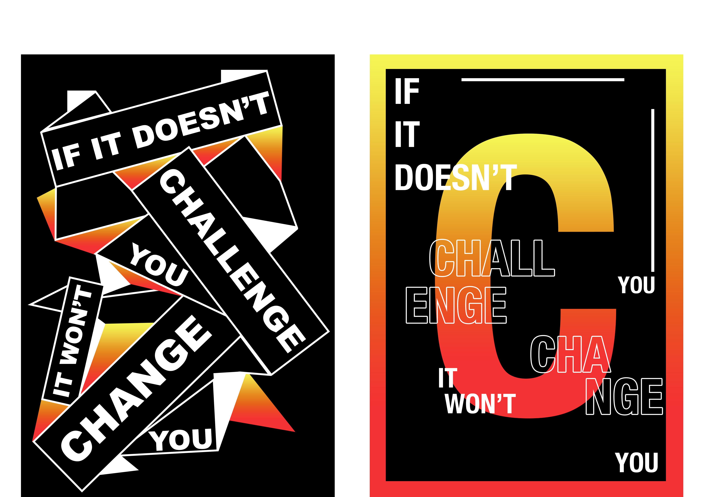

RUBY'S ART
If It Doesn't Challenge You, It Won't Change You.
The mood and theme that I am communicating is overcoming challenges. The way I will do this with my quote is by incorporating mountains and sunsets into my work, which both represent a challenge and change because sunsets change in colour, and mountains sometimes symbolise a challenge. The colours I am mainly using are the same sunset gradient throughout my quotes as well as black and white to make the sunset stand out. I am trying to create a link to mountains in my quotes whether that be through pictures, layout or drawings.

Neville Brody
For my Neville Brody art, I chose to use the same sunset gradient on the same words throughout all three, because a sunset is like a change. I also tried to make them somehow link to mountains, as that is something that I think of when I think about a challenge.
I used fonts that were similar to the ones Neville Brody used in his artwork, but I changed some to make them fit with the bolder, more formal theme of my art. The colours that I used all contrast well together, and the word hierarchy is obvious throughout all three.
I decided to change one of my Neville Brody’s because I felt that as I did more of my art, I improved and I thought that it wasn’t quite as strong as the rest so I decided to change it.

David Carson
For my David Carson artwork, I once again made sure to try and link my art to mountains and sunsets, to try and make a link throughout all of my designs.I used the same hand drawn mountain as I used in one of my Neville Brody’s to create a theme and to give them similarity, the same way I have done with the sunset gradient in every piece of my art to create a similar theme.
The placement of words and images was quite difficult to get right, as I had to try to place them in the same area as the original art while still making it work for my quote which either had more or less words than the originals that I was getting inspiration from. I used fonts that were all quite basic, bold, formal fonts that I think all tie in nicely with one another.

Staynice
For Staynice, I wasn’t really able to incorporate mountains into my artwork so I just stuck with the consistent theme of black, white and the yellow orange and red gradient for a consistent theme between all of my pieces of art.
I tried to make both pieces as similar as I could to the original, while still making them my own and making it work with my colour scheme and quote. I have used hierarchy by making the main words of my quote stand out and making all the other words a bit smaller and less in your face. I think that the colours all contrast really nicely, and you can easily figure out what the main words are. Something that I think I could improve on would be making the angles of the words a bit sharper in the first piece, as they don’t quite line up with the boxes.

Adrian Frutiger
For my own choice art, I chose to do Adrian Frutiger, because I felt that his art really blended in nicely with the rest of my art. I think that I could have used a bit more black in the second one, because it is mainly white, yellow, orange and red, and I feel as though it needed some black to tie it together a bit more.
I struggled to get the placement right and still be able to fit everything in on both of them, because my words were slightly longer and larger than the words used in the originals, but I think I managed to get the placement right in the end.
The composition of my words all work quite well with one another, and your eye gets drawn into the main words of the quote, which represents good use of word hierarchy.

Mood Board
When making my mood board, I tried to use colours and images that I would then use in my art, to try and give me some ideas of what I could use later on when I start my actual artwork.

Trevor Wheatley
For Trevor Wheatley, I am really happy how it turned out. The placement of the letters works really nicely, and I think that the scale and size helps with the 3D look. The fact that the image I chose had three mountains behind one another made it quite useful to make it look more 3D and to make it look as though the word was actually standing on the mountains. Something I found tricky at first was getting the 3D mode working on photoshop, but I eventually managed to make it work.